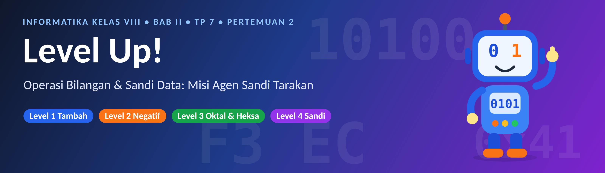
Halo lagi, Agen Sandi!
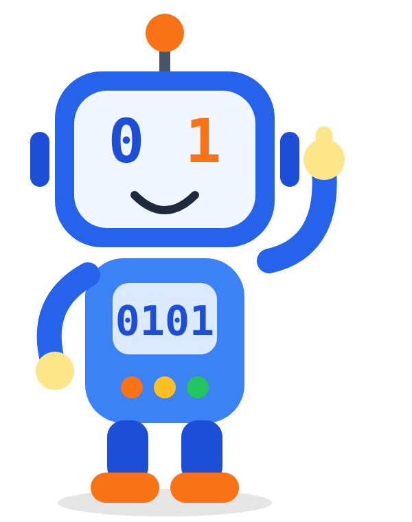
Minggu lalu kamu sudah jago mengubah bilangan: desimal, biner, oktal, dan heksadesimal. Hari ini kita naik level. Kamu akan mengoperasikan bilangan: menjumlah, mengurang, membuat bilangan negatif, sampai mengubah huruf menjadi angka.
Ada kabar dari Bibi: brankas digital sekolah terkunci! Kodenya tersebar di empat level. Ayo kumpulkan semua kode dan buka brankasnya.
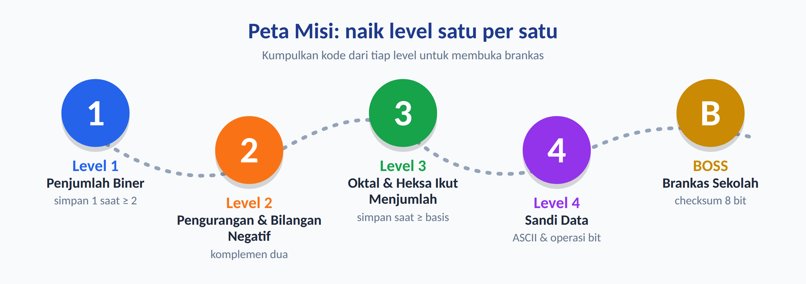
- Menjumlah dan mengurangkan bilangan biner (simpan dan pinjam).
- Menjumlah dan mengurangkan bilangan oktal dan heksadesimal.
- Membuat bilangan negatif dengan komplemen dua dan memahami overflow.
- Mengubah teks menjadi biner (ASCII) dan memakai operasi bit (AND, OR, XOR).
- Memeriksa hasil dengan checksum, lalu menemukan kesalahan pada pekerjaan orang lain.
Kelompokmu berputar ke 4 stasiun. Di tiap stasiun ada Kartu Bantu (contoh) dan Kartu Tantangan. Tulis jawabanmu di Lembar Misi (LKPD).
Selalu cek jawabanmu dengan desimal. Kalau hasil biner tidak cocok dengan hitungan desimal, ada yang salah, dan justru di situlah serunya mencari kesalahannya.
Level 0: Pemanasan
Sebelum naik level, cek dulu kemampuan minggu lalu. Kerjakan di bukumu, lalu buka kotak jawaban.
- Ubah 10102 ke desimal.
- Ubah 4510 ke biner (bagi terus dengan 2, sisa dibaca dari bawah ke atas).
- Ubah 1010 10012 ke heksadesimal dengan jalan pintas 4 bit.
Kotak Jawaban Level 0
1. 1×8 + 0×4 + 1×2 + 0×1 = 10.
2. 45 ÷ 2 = 22 sisa 1; 22 ÷ 2 = 11 sisa 0; 11 ÷ 2 = 5 sisa 1; 5 ÷ 2 = 2 sisa 1; 2 ÷ 2 = 1 sisa 0; 1 ÷ 2 = 0 sisa 1. Dibaca dari bawah: 1011012.
3. 1010 = A dan 1001 = 9, jadi A916.
Level 1: Si Penjumlah Biner
Menjumlah bilangan biner sama seperti menjumlah di kertas waktu SD: dari kanan ke kiri, dan ada simpanan. Bedanya, di biner simpanan muncul jauh lebih cepat, karena simbolnya cuma dua!
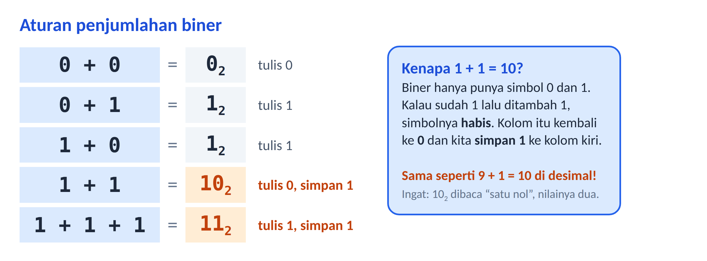
Tebak: berapa 1 + 1 + 1 di biner? (Petunjuk: tiga sama dengan satu ditambah dua, dan dua ditulis 10.)
Jawaban
1 + 1 + 1 = 3 = 112. Tulis 1, simpan 1.
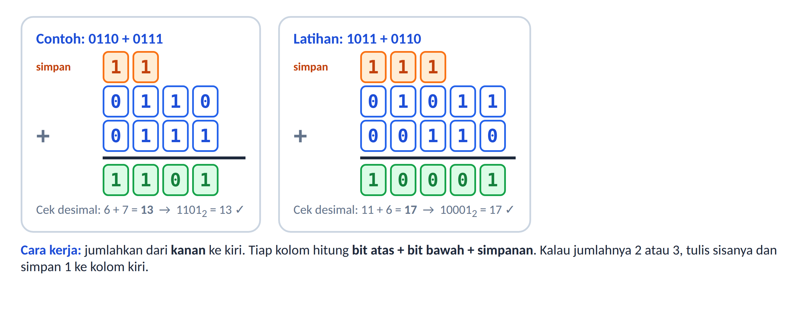
- Sejajarkan bilangan dari kanan.
- Jumlahkan tiap kolom: bit atas + bit bawah + simpanan.
- Jumlah 0 atau 1: tulis apa adanya. Jumlah 2 atau 3: tulis sisanya (0 atau 1), simpan 1 ke kolom kiri.
- Kalau kolom terakhir masih menyisakan simpanan, tulis di paling kiri.
- Cek dengan desimal.
- 0110 + 0011 = ?
- 1011 + 0110 = ? (cek di kertas, lalu bandingkan dengan Gambar 3)
- 1011 0110 + 0011 1101 = ? (ini 8 bit; tulis hasilnya dalam biner dan desimal)
Kotak Jawaban Level 1
1. 0110 + 0011 = 1001 (6 + 3 = 9).
2. 1011 + 0110 = 10001 (11 + 6 = 17).
3. 10110110 + 00111101 = 111100112 = 24310 (182 + 61 = 243). Dengan jalan pintas 4 bit, 1111 0011 = F316. Catat, ini Kode 1 untuk brankas!
Setelah dapat hasil biner, kelompokkan 4 bit dari kanan. 1111 = F, 0011 = 3. Hasilnya F3. Tidak perlu diubah ke desimal dulu.
Level 2: Pengurangan dan Bilangan Negatif
Mengurang dengan meminjam
Mengurang biner juga mirip mengurang biasa. Kalau bit atas lebih kecil dari bit bawah (0 − 1), kita meminjam dari kolom kiri. Satu pinjaman dari kolom kiri bernilai 2 di kolom ini (bukan 10!).
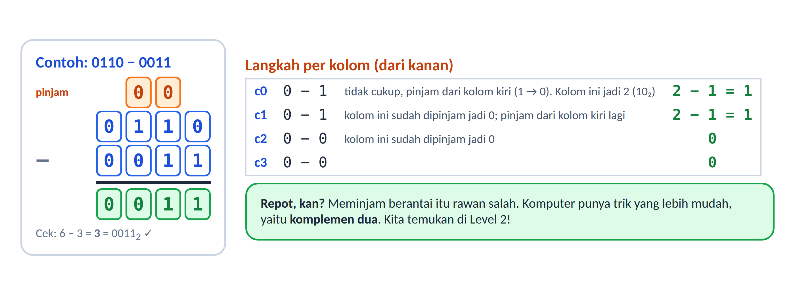
- Hitung 1101 − 0101. Adakah kolom yang perlu meminjam?
- Cek dengan desimal: berapa 13 − 5?
Jawaban
1. Kolom 0: 1−1 = 0. Kolom 1: 0−0 = 0. Kolom 2: 1−1 = 0. Kolom 3: 1−0 = 1. Hasil 10002. Tidak ada yang meminjam.
2. 13 − 5 = 8, dan 10002 = 8. Cocok!
Trik komputer: komplemen dua
Meminjam berantai itu rawan salah. Komputer tidak mau repot. Ia mengubah soal pengurangan jadi soal penjumlahan: 13 − 5 = 13 + (−5). Supaya bisa begitu, kita perlu cara menulis bilangan negatif dalam biner. Caranya disebut komplemen dua.
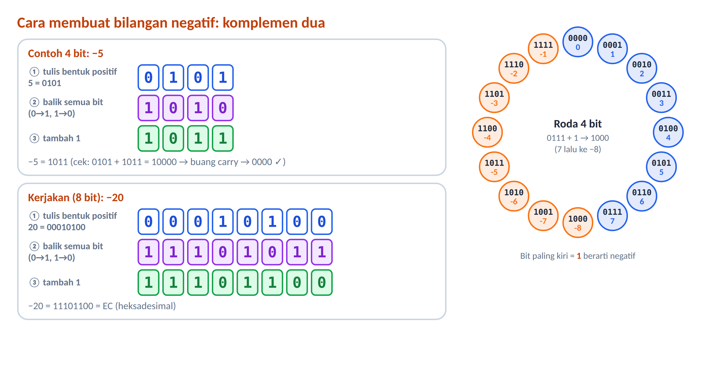
- Bit paling kiri adalah tanda: 0 berarti positif, 1 berarti negatif.
- Bilangan 8 bit bertanda bisa menyimpan −128 sampai +127.
- Kalau bit negatif dijumlahkan, carry di luar 8 bit dibuang.
- Tentukan komplemen dua 8 bit dari −20. Tulis juga dalam heksadesimal.
- Hitung 13 + (−5) dengan komplemen dua 8 bit. Berapa hasilnya setelah carry dibuang?
Kotak Jawaban
1. 20 = 00010100. Balik bit: 11101011. Tambah 1: 11101100 = EC16. Catat, ini Kode 2 untuk brankas!
2. 13 = 00001101 dan −5 = 11111011. Jumlah: 1 00001000. Buang carry: 00001000 = 8. Cocok dengan 13 − 5!
Kalau tempatnya kurang: overflow
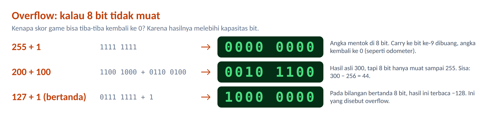
Pada 8 bit tanpa tanda, nilai terbesar adalah 255 (= 28 − 1). 255 + 1 tidak menjadi 256, tetapi kembali ke 0. Ini seperti odometer motor yang berputar kembali ke 000000. Karena itu skor game bisa tiba-tiba turun, dan program yang ceroboh bisa dibobol.
Level 3: Oktal dan Heksa Ikut Menjumlah
Aturannya sama persis dengan biner dan desimal. Yang berubah hanya patokannya: simpan 1 kalau jumlah kolom ≥ basis, dan yang ditulis adalah jumlah − basis.
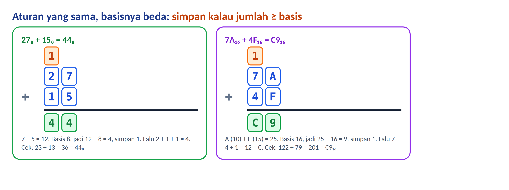
A = 10, B = 11, C = 12, D = 13, E = 14, F = 15. Waktu menjumlah, ubah dulu hurufnya ke angka, hitung, lalu ubah kembali ke huruf.
- 658 + 278 = ?
- 7458 + 3668 = ? (cek dengan desimal)
- 7A16 + 4F16 = ?
- 3E16 − 1B16 = ?
Kotak Jawaban Level 3
1. 5+7 = 12 = 148 (tulis 4, simpan 1); 6+2+1 = 9 = 118 (tulis 1, simpan 1); simpanan ditulis. Hasil 1148 (53 + 23 = 76).
2. Tiap kolom berjumlah 11 = 138. Hasil 13338 (485 + 246 = 731).
3. A+F = 25 = 1916 (tulis 9, simpan 1); 7+4+1 = 12 = C. Hasil C916 (122 + 79 = 201). Catat, ini Kode 3!
4. E−B = 14−11 = 3; 3−1 = 2. Hasil 2316 (62 − 27 = 35).
Level 4: Sandi Data (ASCII dan Operasi Bit)
Komputer hanya kenal angka. Lalu bagaimana ia menyimpan huruf? Setiap huruf, angka, dan tanda baca diberi nomor. Daftarnya disebut ASCII. Nomor itulah yang disimpan dalam biner 8 bit.
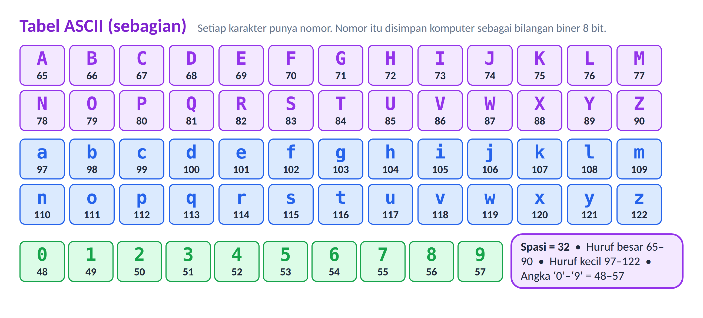
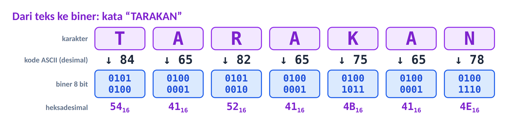
Huruf besar selalu berawalan 010. Lima bit terakhir menunjukkan urutan huruf dalam alfabet. Contoh: 01010100 → 10100 = 20 → huruf ke-20 = T. Kamu tidak perlu menghitung sampai 84!
- Bacalah pesan: 01001011 01000001 01001110. Huruf apa saja? (Petunjuk: pakai jalan pintas.)
- Tulis kata BIT dalam biner 8 bit (B = 66, I = 73, T = 84).
Jawaban
1. 01001011 → 01011 = 11 → K. 01000001 → 00001 = 1 → A. 01001110 → 01110 = 14 → N. Pesannya KAN.
2. B = 66 = 01000010; I = 73 = 01001001; T = 84 = 01010100.
Operasi bit: AND, OR, XOR
Selain menjumlah, komputer mengolah bit lewat operasi logika. Tiap kolom dihitung sendiri-sendiri.
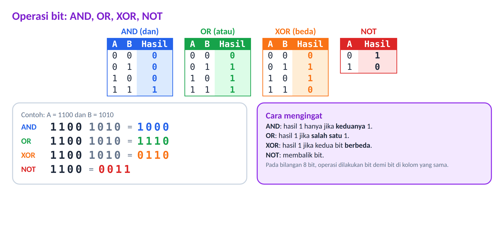
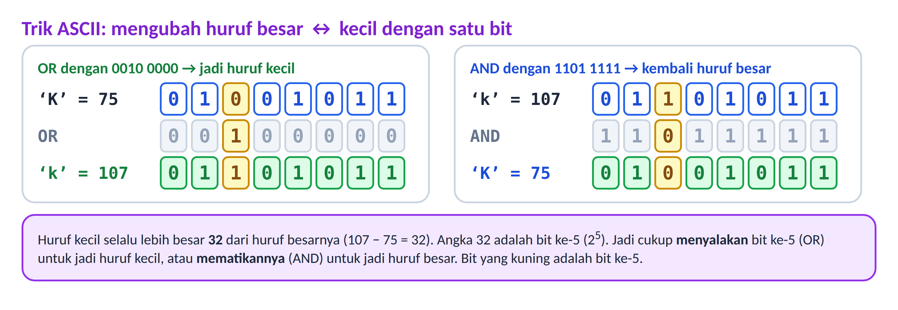
- 1010 AND 0110 = ? 1010 OR 0110 = ? 1010 XOR 0110 = ?
- Ubah huruf ‘K’ (01001011) menjadi ‘k’ dengan OR terhadap 00100000. Hasilnya berapa?
- Sandi rahasia: XOR-kan ‘K’ (01001011) dengan kunci 00001111. Lalu XOR-kan hasilnya sekali lagi dengan kunci yang sama. Apa yang kamu temukan?
Kotak Jawaban Level 4
1. AND = 0010; OR = 1110; XOR = 1100.
2. 01001011 OR 00100000 = 01101011 = ‘k’ (107).
3. 01001011 XOR 00001111 = 01000100 (huruf D). XOR sekali lagi dengan 00001111 = 01001011 (‘K’ kembali!). XOR dengan kunci yang sama dua kali mengembalikan data asli, sehingga cocok untuk sandi sederhana.
Bacalah 01010100 01000001 01010010 01000001 01001011 01000001 01001110 dengan jalan pintasmu. Kata apa yang muncul? Jawabannya adalah kata sandi brankas!
Jawaban kata sandi
T (10100 = 20), A (1), R (10010 = 18), A (1), K (01011 = 11), A (1), N (01110 = 14): TARAKAN.
Boss: Buka Brankas!
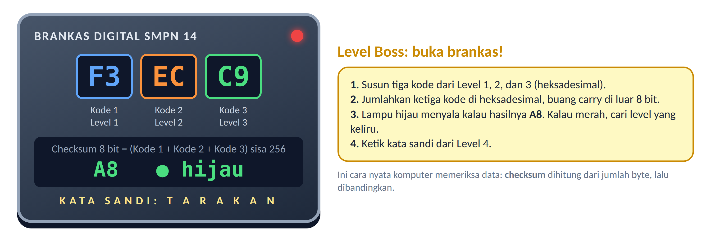
Kumpulkan tiga kode dari Level 1, 2, dan 3 (heksadesimal), lalu jalankan pemeriksaan checksum: jumlahkan ketiga kode, buang carry di luar 8 bit. Kalau semuanya benar, lampu hijau menyala.
- Tulis tiga kodemu: Kode 1 = ___, Kode 2 = ___, Kode 3 = ___.
- Jumlahkan ketiganya dalam heksadesimal. Berapa hasilnya? Berapa 8 bit terakhirnya?
Kotak Jawaban Boss
1. Kode 1 = F3, Kode 2 = EC, Kode 3 = C9.
2. F3 + EC = 1DF; 1DF + C9 = 2A8. Delapan bit terakhir (buang carry 2) = A8. Lampu hijau! (Cek desimal: 243 + 236 + 201 = 680 = 2×256 + 168 dan 168 = A8.)
Kalau hasilmu bukan A8, ada satu level yang keliru. Periksa satu per satu dengan cek desimal.
Detektif Kesalahan
Teknisi Andi tergesa-gesa dan membuat tiga kesalahan. Bantu Andi: temukan letak salahnya, jelaskan penyebabnya, lalu betulkan!
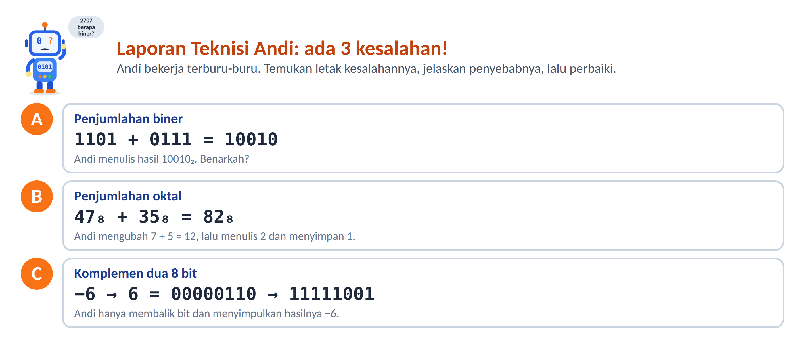
Kotak Jawaban
A. Andi lupa menambahkan simpanan dari kolom paling kanan ke kolom berikutnya. Yang benar: 1101 + 0111 = 10100 (13 + 7 = 20).
B. Andi memakai aturan basis 10 (12 → tulis 2, simpan 1). Di oktal 12 = 148, jadi tulis 4 simpan 1. Lalu 4+3+1 = 8 = 108. Yang benar 1048. Digit 8 tidak boleh ada di oktal.
C. Andi lupa menambah 1 setelah membalik bit. Yang benar: 11111010 (FA16), karena −6 = 256 − 6 = 250.
Di Balik Layar: Kok Komputer Bisa Menjumlah?
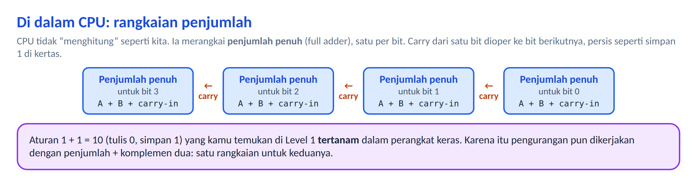
Aturan yang kamu temukan, yaitu 1 + 1 = 10 dan simpan ke kolom kiri, ditanamkan ke dalam rangkaian elektronik di CPU. Satu rangkaian bisa menjumlah, dan dengan komplemen dua ia juga bisa mengurang. Menarik, kan?
Rangkuman: Aturan Emas
| Topik | Aturan emas |
|---|---|
| Menjumlah | Dari kanan ke kiri. Simpan 1 kalau jumlah ≥ basis, tulis jumlah − basis. |
| Biner | 1 + 1 = 10 (tulis 0, simpan 1). 1 + 1 + 1 = 11 (tulis 1, simpan 1). |
| Mengurang | Kalau 0 − 1, pinjam dari kiri. Pinjaman bernilai basis (2 di biner, 8 di oktal, 16 di heksa). |
| Bilangan negatif | −x = balik semua bit x, lalu tambah 1 (komplemen dua). Bit paling kiri 1 = negatif. |
| Overflow | 8 bit menampung 0–255 (tanpa tanda) atau −128 sampai 127 (bertanda). Lebih dari itu, carry dibuang. |
| ASCII | Huruf besar A = 65 … Z = 90, huruf kecil a = 97 … z = 122. Disimpan dalam 8 bit. |
| Operasi bit | AND: keduanya 1. OR: salah satu 1. XOR: berbeda. NOT: dibalik. |
| Checksum | Jumlah semua byte, ambil 8 bit terakhir, untuk memeriksa data rusak atau tidak. |
Kebiasaan detektif hebat: selalu cek balik ke desimal. Kalau hasil biner tidak cocok dengan hitungan desimal, ada yang keliru.
Latihan Mandiri
- Hitung 100112 + 011102 dan cek dengan desimal.
- Hitung 110102 − 010112 dan cek dengan desimal.
- Hitung 3F16 + 2C16.
- Tentukan komplemen dua 8 bit dari −7, tulis dalam biner dan heksadesimal.
- Sebuah penghitung 8 bit tanpa tanda menyimpan 240. Berapa nilainya setelah ditambah 20?
- Tuliskan kata INFO dalam ASCII biner 8 bit. (I = 73, N = 78, F = 70, O = 79)
- Hitung 1110 AND 1011 dan 1110 XOR 1011.
- Kata sandi 01000010 01001001 01001110 dienkripsi. Bacalah kata aslinya dengan jalan pintas.
Kunci latihan mandiri
1. 10011 + 01110 = 1000012 (19 + 14 = 33).
2. 11010 − 01011 = 011112 (26 − 11 = 15).
3. F+C = 27 = 1B16 (tulis B, simpan 1); 3+2+1 = 6. Hasil 6B16 (63 + 44 = 107).
4. 7 = 00000111. Balik: 11111000. Tambah 1: 11111001 = F916.
5. 240 + 20 = 260 → 260 − 256 = 4 (overflow).
6. I = 01001001, N = 01001110, F = 01000110, O = 01001111.
7. 1110 AND 1011 = 1010; 1110 XOR 1011 = 0101.
8. 01000010 → 00010 = 2 → B; 01001001 → 01001 = 9 → I; 01001110 → 01110 = 14 → N. Kata: BIN.
Refleksi
- Level mana yang paling seru? Level mana yang paling sulit? Kenapa?
- Apa kesalahan yang paling sering kamu buat hari ini, dan bagaimana kamu mencegahnya lain kali?
- Di mana kamu bisa menemukan sandi ASCII, checksum, atau overflow dalam kehidupan sehari-hari?
Kamus Mini
| Istilah | Artinya |
|---|---|
| Simpanan (carry) | Angka 1 yang dipindah ke kolom kiri saat jumlah kolom ≥ basis. |
| Pinjam (borrow) | Mengambil 1 dari kolom kiri (bernilai sebesar basis) saat bit atas lebih kecil. |
| Komplemen dua | Cara menyatakan bilangan negatif: balik semua bit lalu tambah 1. |
| Overflow | Hasil melebihi jumlah bit yang tersedia sehingga nilainya "berputar". |
| ASCII | Daftar nomor untuk huruf, angka, dan simbol. |
| Operasi bit | AND, OR, XOR, NOT pada bit di kolom yang sama. |
| Checksum | Angka pemeriksa hasil penjumlahan byte untuk mendeteksi data rusak. |
| Byte | 8 bit. |